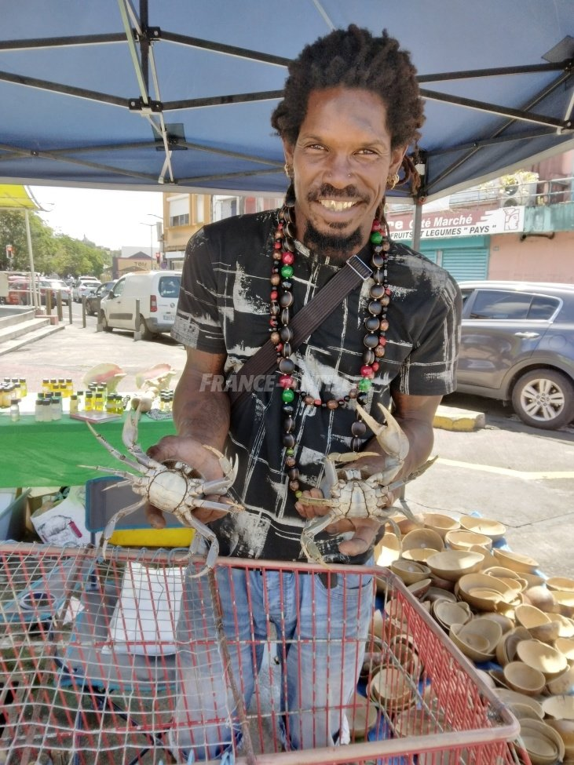
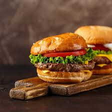
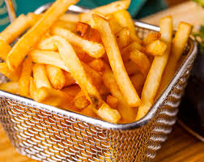
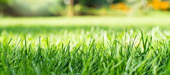
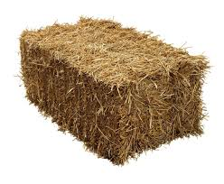
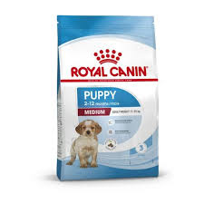
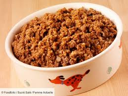

L'histoire des poules La chèvre Vente de cochons
Le crabe est un caca crustacé décapode.
Il existe 3 familles de crabe :
Le crabe de Terre est le plus consommé en Guadeloupe.
Il est vendu aux bords des routes en Avril aux alentours des 1500$.
On le retrouve aussi en vente sur les marchés de poissons, pour se faire remarquer, les vendeurs crient : "Crabes Touloulou!!!".

Les crabes marins se nourissent généralement de hamburgers, de frites, et parfois des pates crues.
  
Les crabes d'eau douce eux, sont plus végétariens et mangent du gazon et du foin comme les vaches et les cheveaux.
 
Les crabes de terres quant à eux se nourissent de nourriture pour chiens comme les croquettes, la paté etc...
 